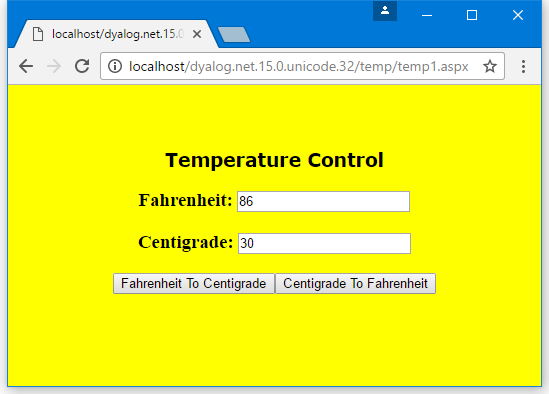

Example: The TemperatureConverterCtl1 Control
The TemperatureConverterCtl1 control is an example of a compositional control, that is, a server-side custom control that is composed of other standard controls.
In this example, the TemperatureConverterCtl1 control gathers together two textboxes and two push buttons into a single component as shown in . When a user enters a number in the Centigrade field and clicks the Centigrade To Fahrenheit button, the control converts accordingly (similarly, if the user enters a number in the Fahrenheit box and clicks the Fahrenheit To Centigrade button).

The TemperatureConverterCtl1 control contains other standard controls as child controls. A control that acts as a container must implement an interface called INamingContainer.
This interface does not require any methods; it merely acts as a marker. So the :Class statement specifies that it provides this interface:
:Class TemperatureConverterCtl1: Control, System.Web.UI.INamingContainerChild Controls
Whenever ASP.NET initialises a Control, it calls its CreateChildControls method. The default CreateChildControls method does not do anything, so we need to define a function called CreateChildControls with the appropriate public interface (no arguments and no result):
∇ CreateChildControls
[1] :Access Public override
[2] :Signature CreateChildControls
[3]
[4] Controls.Add ⎕NEW LiteralControl,⊂⊂'<h3>Fahrenheit: '
[5] m_FahrenheitTextBox←⎕NEW TextBox
[6] m_FahrenheitTextBox.Text←,'0'
[7] Controls.Add m_FahrenheitTextBox
[8] Controls.Add ⎕NEW LiteralControl,⊂⊂'</h3>'
[9]
[10] Controls.Add ⎕NEW LiteralControl,⊂⊂'<h3>Centigrade: '
[11] m_CentigradeTextBox←⎕NEW TextBox
[12] m_CentigradeTextBox.Text←,'0'
[13] Controls.Add m_CentigradeTextBox
[14] Controls.Add ⎕NEW LiteralControl,⊂⊂'</h3>'
[15]
[16] F2CButton←⎕NEW Button
[17] F2CButton.Text←'Fahrenheit To Centigrade'
[18] F2CButton.onClick←⎕OR'F2CConvertBtn_Click'
[19] Controls.Add F2CButton
[20]
[21] C2FButton←⎕NEW Button
[22] C2FButton.Text←'Centigrade To Fahrenheit'
[23] C2FButton.onClick←⎕OR'C2FConvertBtn_Click'
[24] Controls.Add C2FButton
∇Line [4] creates an instance of a LiteralControl (a label) containing the text "Fahrenheit" with an HTML tag "<h3>". Controls is a property of the Control class (from which TemperatureConverterCtl1 inherits) that returns a ControlCollection object This has an Add method whose job is to add the specified control to the list of child controls managed by the object.
Lines [5-6] create a TextBox child control containing the text "0", and line [7] adds it to the child control list.
Line [8] adds a second LiteralControl to terminate the "<h3>" tag.
Lines [10-14] do the same for "Centigrade".
Lines [16-17] create a Button control labelled "Fahrenheit To Centigrade". Line [18] associates the callback function F2CConvertBtn_Click with the button's onClick event.
Information
⎕ORmust be assigned to the function rather than its name.
Line [19] adds the button to the list of child controls. Lines [21-24] create a "Centigrade To Fahrenheit" button in the same way.
This function is run every time the page is loaded; however, in a postback situation, other code steps in to modify the values in the textboxes.
Fahrenheit and Centigrade Values
TemperatureConverterCtl1 maintains two public properties called CentigradeValue and FahrenheitValue, which can be accessed by a client application. These properties are not exposed directly as variables, but are obtained and set using property get (or accessor) and property set (or mutator) functions. (This is recommended practice for C#, so the example shows how it is done in APL). In this case, the values are stored in or obtained directly from the corresponding textboxes set up by CreateChildControls:
:Property CentigradeValue
∇ C←get
:Access Public
:Signature Double←get_CentigradeValue
C←⍎m_CentigradeTextBox.Text
∇
∇ set C
:Access Public
:Signature set_CentigradeValue Double Value
m_CentigradeTextBox.Text←⍕C.NewValue
∇
:EndProperty ⍝ CentigradeValueThe Get function uses ⍎ to convert the text in the textbox to a numeric value; in a real application, something more robust would be required.
Similar functions to handle the Fahrenheit property are also provided.
Responding to Button Presses
Child Controls shows how APL callback functions have been attached to the onClick events in the two buttons. The C2FconvertBtn_Click callback function obtains the CentigradeValue property, converts it to Fahrenheit using C2F, and then sets the FahrenheitValue property:
∇ C2FConvertBtn_Click args
:Access Public
:Signature C2FConvertBtn_Click Object,EventArgs
FahrenheitValue←C2F CentigradeValue
∇
∇ f←C2F c
[1] f←32+c×1.8
∇
∇ F2CConvertBtn_Click args
:Access Public
:Signature F2CConvertBtn_Click Object,EventArgs
CentigradeValue←F2C FahrenheitValue
∇
∇ c←F2C f
[1] c←(f-32)÷1.8
∇The F2CconvertBtn_Click callback function converts from Fahrenheit to Centigrade. The functions C2F and F2C are internal functions that are private to the control, therefore it is not necessary to define public interfaces for them.
Using the TemperatureConverterCtl1 Control on a Page
The text of the script file [DYALOG]\Samples\asp.net\temp\temp1.aspx is shown below. There is no difference between this example and the simple.aspx described in Example: The SimpleCtl Control.
<%@ Register TagPrefix="Dyalog" Namespace="DyalogSamples" Assembly="temp" %>
<html>
<body bgcolor="yellow">
<br><br>
<center>
<h2><font face="Verdana" color="black">Temperature Control</font></h2>
<form runat=server>
<Dyalog:TemperatureConverterCtl1 id=TempCvtCtl1 runat=server/>
</form>
</center>
</body>
</html>
The HTML generated by the control at run-time is shown below. Instead of the server-side control declaration in temp1.aspx, there are two edit controls with numerical values in them, and two push buttons to submit data entered on the form to the server:
<html>
<body bgcolor="yellow">
<br><br>
<center>
<h2><font face="Verdana" color="black">Temperature Control</font></h2>
<form name="ctrl1" method="post" action="temp1.aspx" id="ctrl1">
<input type="hidden" name="__VIEWSTATE" value="YTB6MTc3MzAxNzYxNF9fX3g=03f01d88" />
<h2>Fahrenheit: <input name="TempCvtCtl1:ctrl1" type="text" value="32" /></h2><h2>Centigrade: <input name="TempCvtCtl1:ctrl4" type="text" value="0" /></h2><input type="submit" name="TempCvtCtl1:ctrl6" value="Fahrenheit To Centigrade" /><input type="submit" name="TempCvtCtl1:ctrl7" value="Centigrade To Fahrenheit" />
</form>
</center>
</body>
</html>